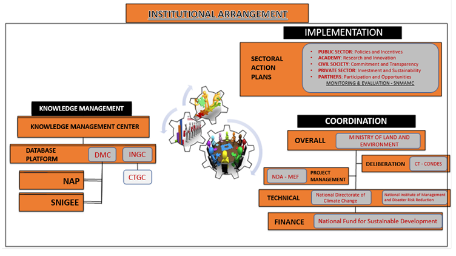
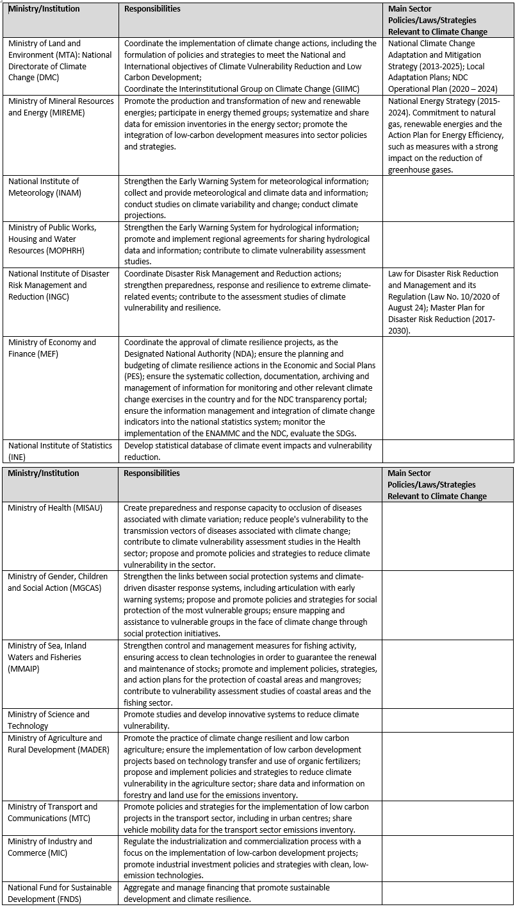
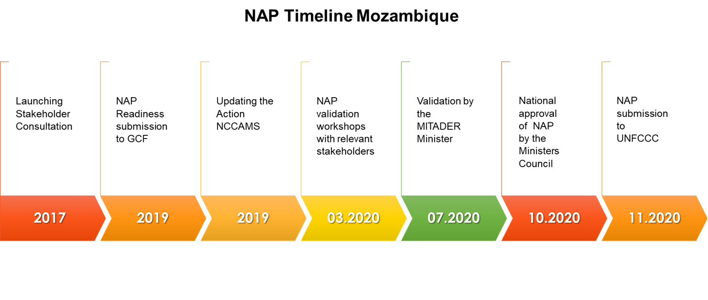

Chapter 6 NAP Info
6.1 Vision, mission, and goals
Vision: “A prosperous and climate change resilient Mozambique, with a green economy in all social and economic sectors”
(Source: National Climate Change Adaptation and Mitigation Strategy - 2012, p.27)
Mission: “reduce climate change vulnerability and improve the wellbeing of Mozambicans through the implementation of concrete measures for adaptation and climate risk reduction, promoting mitigation and low-carbon development, aiming at sustainable development, with the active participation of all stakeholders in the social, environmental and economic sectors”
(Source: National Climate Change Adaptation and Mitigation Strategy - 2012, p.27)
Goals:
- Reduce climate risks through the strengthening of the early warning system and of the capacity to prepare and respond to climate risks;
- Improve the capacity for integrated water resources management including building climate resilient hydraulic infrastructures;
- Increase the effectiveness of land use and spatial planning (protection of floodplains, coastal and other areas vulnerable to floods);
- Increase the resilience of agriculture, livestock and fisheries, guaranteeing the adequate levels of food security and nutrition;
- Increase the adaptive capacity of the most vulnerable groups;
- Reduce people’s vulnerability to climate change related vector-borne diseases or other diseases;
- Ensure biodiversity’s protection;
- Reduce soil degradation and promote mechanisms for the planting of trees for local use;
- Develop resilient climate resilience mechanisms for infrastructures, urban areas and other human settlements and tourist and coastal zones;
- Align the legal and institutional framework with the NCCAMS;
- Strengthen research and systematic observation institutions for the collection of data related to vulnerability assessment and adaptation to climate change;
- Develop and ameliorate the level of knowledge and capacity to act on climate change; and
- Promote the transfer and adoption of clean and climate change resilient technologies.
(Source: Mozambique Intended Nationally Determined Contribution (INDC), p.6-7)
6.2 Framework for the NAP
6.2.1 The National Adaptation Plan Process in Mozambique
Mozambique ratified the United Nations Framework Convention on Climate Change on August 24th, 1994 and became Party in 25th August 1995. In 2006, the country submitted its Initial National Communication to the UNFCCC which included, among others, information regarding greenhouse gases (GHG) inventory, vulnerability and adaptation (MICOA, 2003). In 2007, the National Adaptation Programme of Action (NAPA) was published including four initiatives to address the country’s immediate and urgent adaptation needs on social and development sectors with a focus on agriculture, fisheries, energy, environment, water resources, coastal zones, disaster alert and early warning systems and erosion control (MICOA, 2007). With the objective to amplify efforts to tackle climate change impacts through adaptation and promote the development of a low-carbon economy, the National Climate Change Strategy 2013-2025 was published in 2012 recognizing climate risk reduction as a national priority (Ministry for the Coordination of Environmental Action, 2012). In October 2015, Mozambique published its INDC communicating the country’s mitigation contribution and also including an adaptation component. According to the INDC, the implementation of the NCCAMS for the short term period (2013 – 2019) was based on the implementation of Actions Plan aiming to increase local resilience, fight poverty, identify adaptation and low carbon development opportunities in the communities through the mainstreaming of adaptation in the planning and budgeting processes at the district level. The National Adaptation Plan (NAP) consist in the implementation of actions with the same objective as the Action Plans but for the medium term (2020 to 2025) at the provincial level, and for the long term (2026 to 2030) at the national level (Government of The Republic of Mozambique, 2015). Therefore, the present NAP document include the short term actions implemented at the local level and propose projects and programmes to be implemented for the period 2020 – 2030 including provincial and national levels.
6.2.2 Essential functions of the NAP process
As part of the group of Least Developed Countries (LDCs), Mozambique has limited adaptive capacity due its low development levels, geographical location and socio-economic aspects. At the same time, is one of the most risk-prone countries in the world and the third African country most exposed to weather-related hazards and climate change impacts (Mozambique Crisis Response Plan 2020). The establishment of the NAP process in Mozambique aims to facilitate the integration of climate change adaptation into development planning and support the development and implementation of projects and programs aiming to reduce vulnerability to climate change impacts and build adaptive capacity and resilience. Following the (LDC Expert Group, 2012), the adaptation planning in Mozambique is intended to be a progressive and iterative process, based on national priorities reflecting plans, policies and strategies aiming to achieve sustainable development. It is guided by country-owned, country-driven, gender-sensitive and participatory approaches, based on the best available science and indigenous knowledge, with focus on the needs of vulnerable groups, communities and ecosystems.
6.2.3 The NAP as the umbrella programme for adaptation
6.2.4 Coherence with national development context, SDGs, Sendai and other relevant frameworks
6.3 Institutional Arrangements and Coordination Mechanisms
The Institutional arrangement emerges as an approach for better coordination and articulation among the various institutions/sectors. It aims at assigning responsibilities and hierarchical competences as well as defining standards/criteria for the flow and sharing of information. As a result, it is expected that climate change adaptation and mitigation actions will be implemented in an effective, transparent, coordinated way, and reinforcing the medium and long term action planning processes. The institutional arrangement is based on the National Strategy for Adaptation and Mitigation to Climate Change in Mozambique (MICOA, 2012) and consequently revised in the NDC Operational Plan (MITADER, 2018).
The institutional arrangement presented here has been adapted to reflect the current context of institutions facing climate change in sectoral activities and budget. To this end, the overall coordination lies with the Ministry of Land and Environment (MTA), through the National Directorate of Climate Change (DMC), which serves as the focal point for the convention.
The DMC is also responsible for coordinating the Inter-Institutional Group on Climate Change (GIIMC), which is composed of representatives from Ministries/Institutes whose mandates cover areas and/or sectors relevant to climate change, and representatives from non-governmental actors, the private sector, civil society, academia, and the media (figure 1.16).
Figure 1.16: Institutional Arrangements of ENAMMC and NDC Implementation Mechanisms. Source: adapted from MICOA, 2012 & MITADER, 2018

Next, the key institutions are listed, containing the description of roles and responsibilities, related to the functions of proposing policies, strategies and decision-making, coordination, counseling and knowledge management, planning, communication, support mobilization, implementation of actions as described in table 1.6.

These entities also play a key role in their contribution to:
- Harmonization of national actions and priorities considering the interests of different sectors and entities;
- Appreciation and technical approval of documents prepared in the country, in the context of the implementation of the Convention and other instruments related to it;
- Preparation of national and international climate reports; and,
- Development of local initiatives for adaptation and mitigation to climate change, as well as for the promotion and continuous establishment of capacities, through studies and development of relevant courses.
(Source: Second National Communication Draft, p. 28-31. Translated from Portuguese)
6.4 Current climate change adaptation projects and activities
6.5 NAP Approach
6.5.1 Guiding principles
- Proactive/Preventive nature – demonstrate leadership and a pioneering spirit rather than a reactive attitude;
- Social equity – recognize and respect human rights and the fact that all citizens, regardless of their social status, should lead specific actions for mitigation and adaptation to CC, noting the cultural diversity that characterizes the Mozambican society;
- Equality – respecting the rights of men and women in all spheres of political, social, economic and cultural life, irrespective of colour, race, ethnic origin or place of birth, religion, level of education, socioeconomic status, occupation, political belief and party affiliation;
- Gender parity – respect the principle of equality between men and women, to ensure the representation of women in CC decision-making bodies and management;
- Sustainability – design CC interventions that are economically, financially, environmentally, socially and culturally sustainable;
- Transparency and participation – provide information exchange, accountability and adequate responses among different actors related to CC, to implement the Strategy through a broad, inclusive and participatory process.
(Source: National Climate Change Adaptation and Mitigation Strategy - 2012, p.27)
(Suggestion)
- Integration / mainstreaming
- Inclusiveness / equity / vulnerability-focused - gender-sensitive / attention to vulnerable groups (women, children, youth, elderly, people with disabilities, indigenous people and traditional communities) / indigenous knowledge
- Country-driven / country ownership / national context / national priorities
- Transparency / good governance
- Participatory / people-centered / social cohesion
- Science and knowledge-based / ecosystem-based and community-based approaches
- Principle of partnership
- Innovation / technology
- Flexibility
6.5.2 A systems approach to adaptation
The Government of Mozambique identifies climate shocks and seasonal variability, over exploitation of marine and timber resources, solid waste management, environmental sanitation and uncontrolled bush fires as major challenges.
Key economic sectors and systems
(Source: NAP Prototype, 25.09.2021, p. 21)
6.5.3 Road Map
“Mozambique submitted the road map for the NAP to the UNFCCC and is receiving support from UNDP for the NAP process. With the assistance from UNDP, UN Environment National Adaptation Plan Global Support Programme (NAP-GSP) and additional financing from GIZ, the Mozambique Ministry of Land, Environment and Rural Development (MITADER) conducted training, connecting stakeholders from across the nation, with the aim to build a roadmap for a National Adaptation Plan. Mozambique has initiated the NAP process, an initiative which will contribute to a greater and deeper mainstreaming of climate change issues in the planning processes at all levels, in the medium and long-terms. The NAP road map was launched and the consultation process with national stakeholders and awareness of the NAP process started. The Government, working with UNDP and DANIDA submitted a proposal of $3m to GCF to access the readiness funds.”
(Source: Mozambique Country Climate Risk Assessment Report, p. 28-29)

(Source: NAP Prototype, 25.09.2021, p. 31)